续费日期分散
邮件、应用内通知和支付记录彼此分离，用户缺少统一视图。
把分散在账单、邮件和截图里的订阅，整理成一张可读、可信、可行动的续费地图。
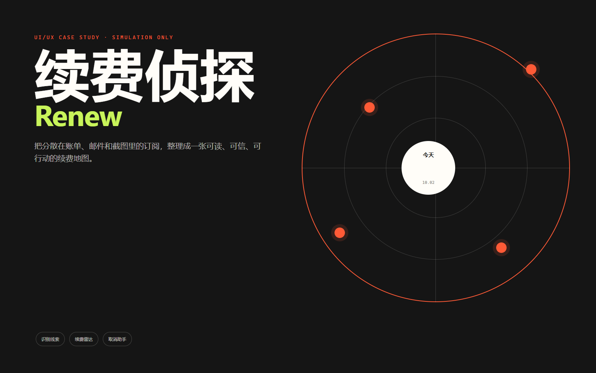
用户的问题不是不会记账，而是不知道下周会扣什么、哪些订阅已经失去价值，以及取消要从哪里开始。
邮件、应用内通知和支付记录彼此分离，用户缺少统一视图。
免费试用和年度订阅常在用户想起之前完成扣费。
识别出问题只是第一步，真正困难的是确认剩余权益并完成取消。
同时拥有 8～12 个订阅。会为了免费试用先开通服务，月底才发现扣费；不想做复杂预算，只想让订阅和续费变得透明。
记账工具解释过去，提醒工具只发通知。Renew 把识别、风险解释和取消行动放在同一条路径里。
所有订阅名称、金额和日期均为模拟数据，用于展示产品逻辑和视觉系统。
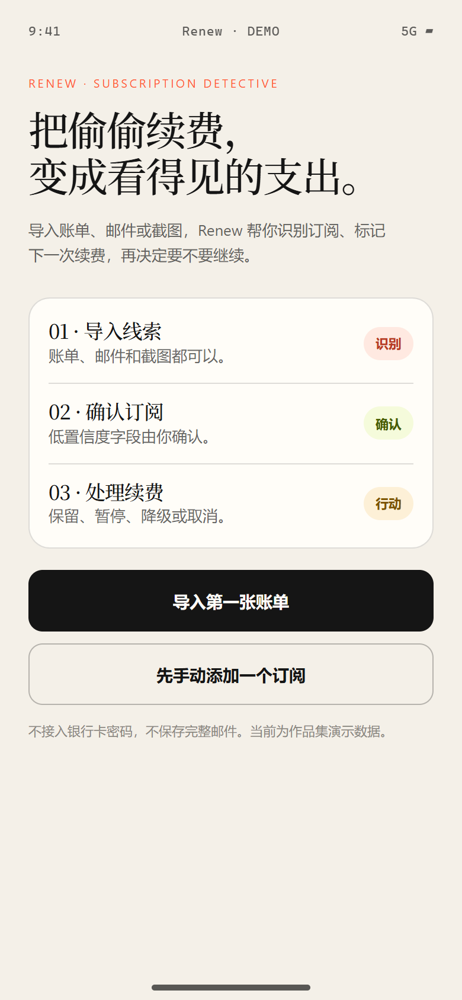
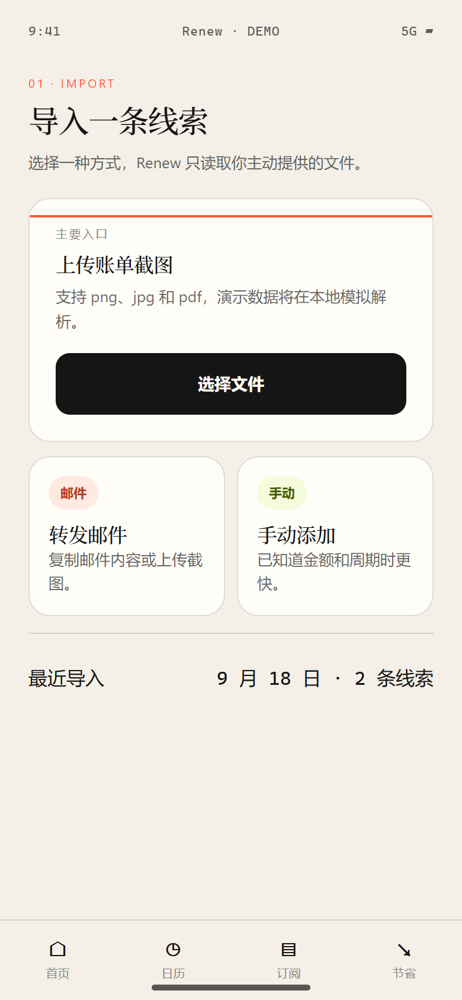
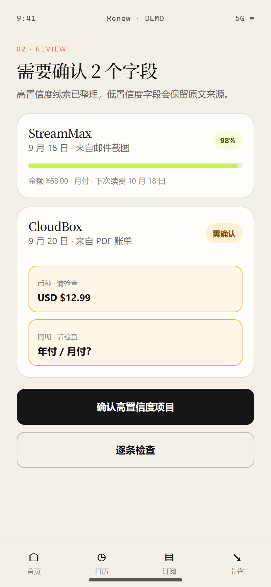
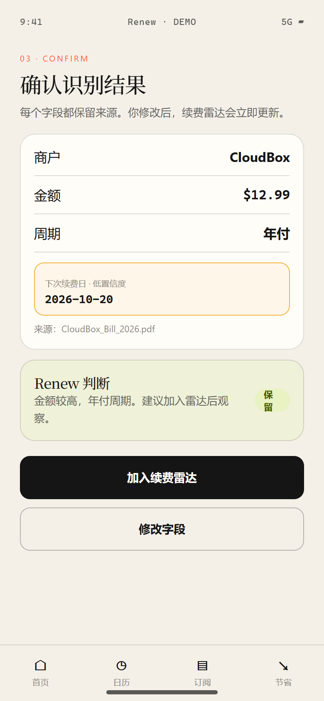
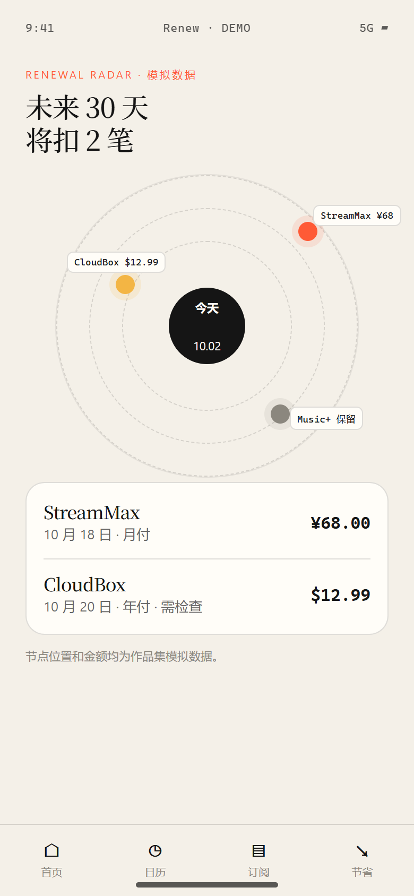
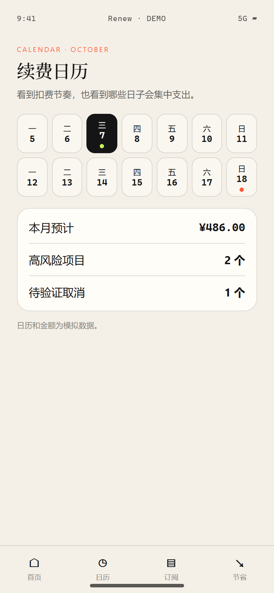
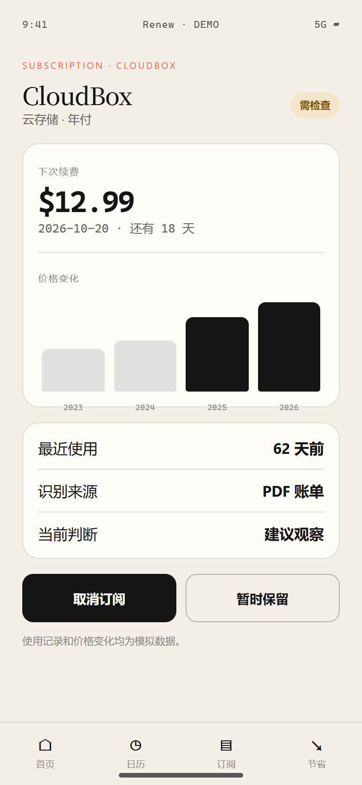
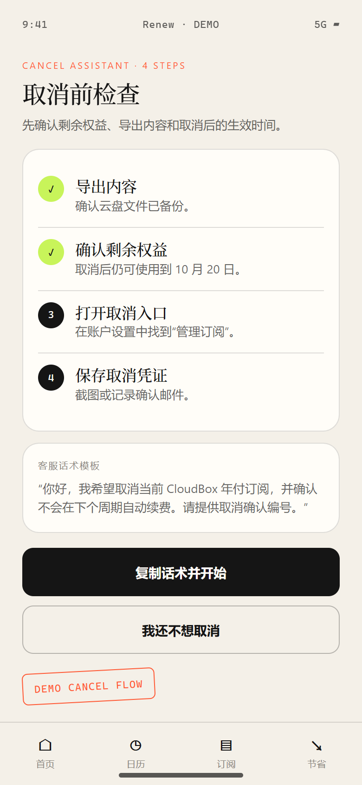
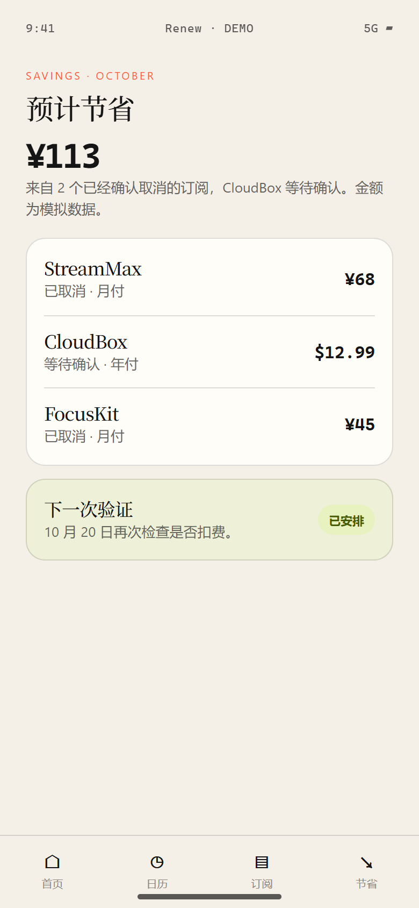
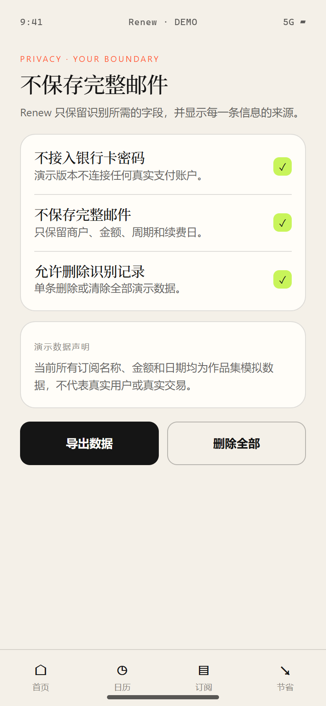
Renew 不把 OCR 结果直接变成扣费事实。每个字段都保留来源，低置信度信息必须经过用户检查。
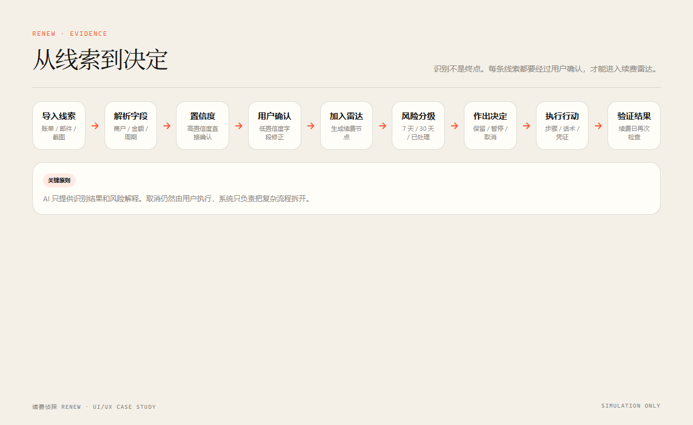
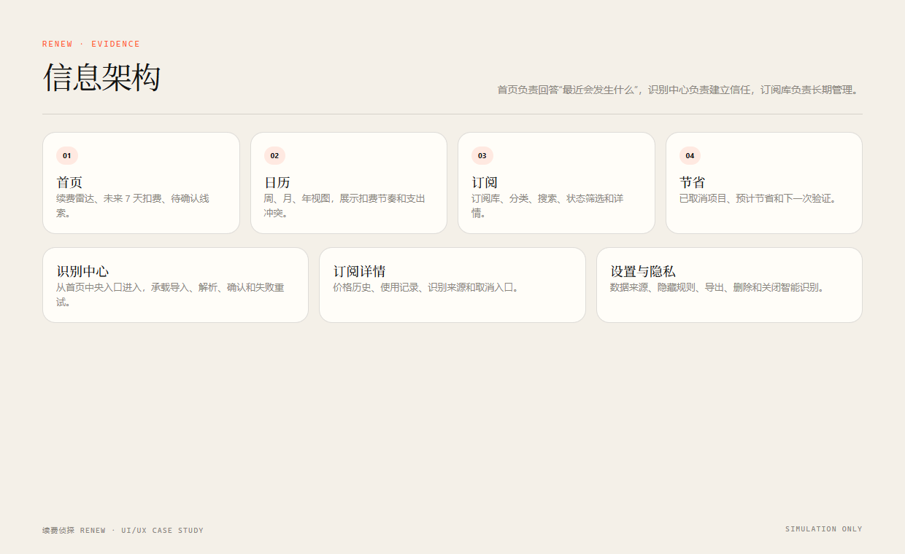
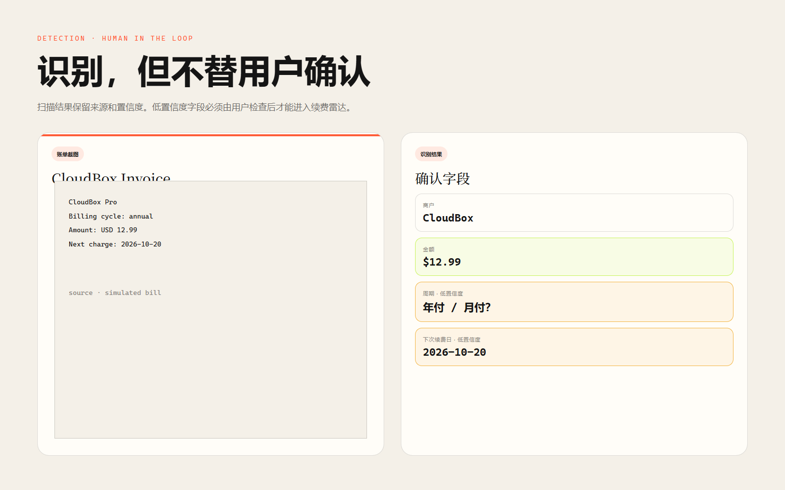
中心是今天，轨道按时间展开。高、中、低风险帮助用户安排处理顺序，而不是制造焦虑。
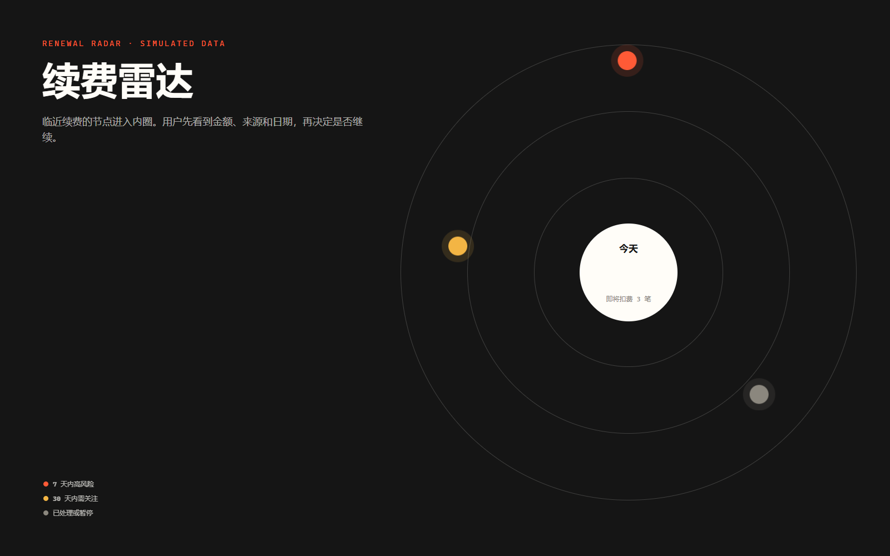
金额较高、使用频率低或刚刚涨价，进入首页最高优先级。
显示在日历内圈，用户可以选择延后提醒。
不继续打扰，保留来源，并在续费日再次验证。
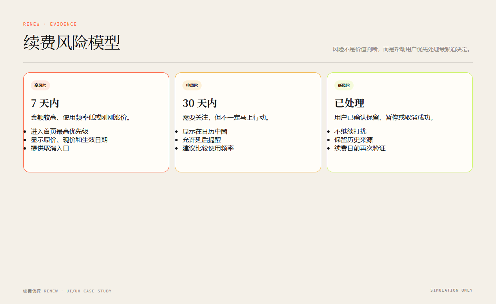
把取消拆成准备、操作、确认和验证四个阶段，让用户知道自己在哪一步，也知道什么时候算真正完成。
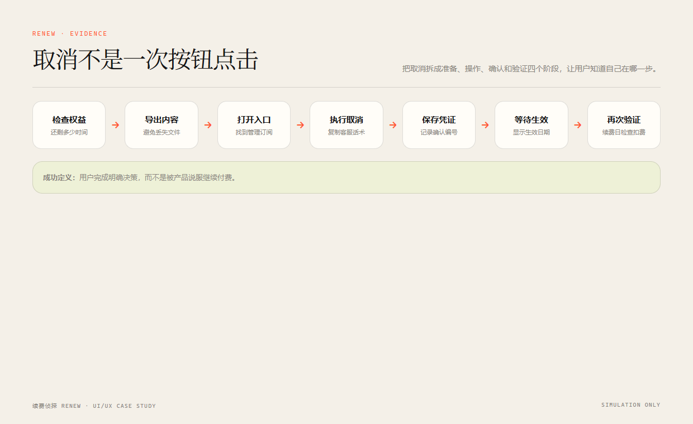
确认取消后还能使用到哪一天，是否需要先导出内容。
提供路径说明、客服话术和取消注意事项。
记录确认编号、邮件或截图，避免模糊状态。
如果没有扣费，写入节省报告；如果仍然扣费，提醒再次处理。
作品集版本不碰真实支付和隐私数据。产品设计必须让用户知道信息从哪里来、会被保存什么、以及如何撤回。
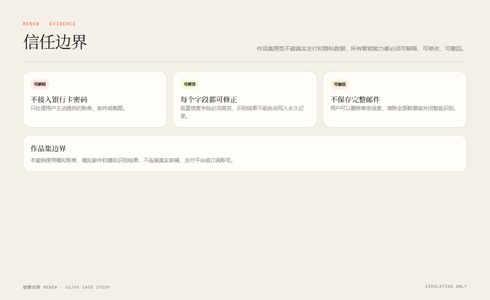
演示版本不连接真实支付账户，也不保存支付凭证。
只保留识别所需的字段，并显示每个字段的来源。
用户始终执行最后动作，系统只提供步骤、模板和检查清单。
用纸张底色、墨黑文字、信号橙和酸绿色建立识别度，避免传统银行 App 的蓝色渐变和信息表格。
衬线标题负责杂志感，无衬线正文负责可读性，等宽字体用于金额、日期和置信度。
12–20px 圆角、1px 描边和克制层级。一个页面最多一个主要行动按钮。
轨道旋转、扫描线和风险节点脉冲都保持低幅度，并支持减少动态效果。
作品集不展示虚假测试数据，只展示产品定义的成功指标和执行边界。
用户在收到提醒后完成保留、暂停、降级或取消中的明确选择。
既要看能否提取字段，也要看用户需要修改多少信息。
提醒是否帮助用户行动，而不是制造更多待办。
不仅记录用户点击了取消，还要验证后续是否真的停止扣费。
用户是否理解自动识别的不确定性，并能控制最终结果。
适合少量订阅，保留基础续费和试用提醒。
提供批量识别、价格变化历史、取消模板和节省报告。
订阅排序只依据用户数据、风险和偏好，不依据商业合作。
作品集声明：本案例不接入真实邮箱、OCR 服务、支付平台、银行账户或取消接口。所有订阅、金额和日期均为模拟数据。Renew 不提供金融建议，也不自动执行支付、退款或取消操作。
用户研究、产品边界、信息架构、复杂流程、数据可视化、视觉系统和信任设计。
家庭订阅共享、跨账号视图、价格变化历史和取消话术模板。
静态响应式案例页、十张手机界面、五张流程图、两张动效海报、一张主视觉和可复现的本地生成脚本。
同一订阅出现多条账单时，允许合并或忽略，不重复进入雷达。
币种不明确时高亮字段，避免把美元金额直接当成人民币。
账号使用人和付款人可能不同，详情页必须允许备注实际支付者。
保留取消凭证，并在续费日附近提醒用户再次验证。